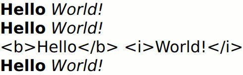

Text QML Type
Specifies how to add formatted text to a scene. More...
| Import Statement: | import QtQuick |
| Inherits: |
Properties
- advance : size
- antialiasing : bool
- baseUrl : url
- bottomPadding : real
- clip : bool
- color : color
- contentHeight : real
- contentWidth : real
- effectiveHorizontalAlignment : enumeration
- elide : enumeration
- font.bold : bool
- font.capitalization : enumeration
- font.family : string
- font.features : object
(since 6.6) - font.hintingPreference : enumeration
- font.italic : bool
- font.kerning : bool
- font.letterSpacing : real
- font.pixelSize : int
- font.pointSize : real
- font.preferShaping : bool
- font.strikeout : bool
- font.styleName : string
- font.underline : bool
- font.variableAxes : object
(since 6.7) - font.weight : int
- font.wordSpacing : real
- fontInfo.bold : bool
- fontInfo.family : string
- fontInfo.italic : bool
- fontInfo.pixelSize : int
- fontInfo.pointSize : real
- fontInfo.styleName : string
- fontInfo.weight : int
- fontSizeMode : enumeration
- horizontalAlignment : enumeration
- hoveredLink : string
- leftPadding : real
- lineCount : int
- lineHeight : real
- lineHeightMode : enumeration
- linkColor : color
- maximumLineCount : int
- minimumPixelSize : int
- minimumPointSize : int
- padding : real
- renderType : enumeration
- renderTypeQuality : int
(since 6.0) - rightPadding : real
- style : enumeration
- styleColor : color
- text : string
- textFormat : enumeration
- topPadding : real
- truncated : bool
- verticalAlignment : enumeration
- wrapMode : enumeration
Signals
- lineLaidOut(object line)
- linkActivated(string link)
- linkHovered(string link)
Methods
- forceLayout()
- linkAt(real x, real y)
Detailed Description
Text items can display both plain and rich text. For example, you can define red text with a specific font and size like this:
Text { text: "Hello World!" font.family: "Helvetica" font.pointSize: 24 color: "red" }
Use HTML-style markup or Markdown to define rich text:
Using HTML-style
Text { text: "<b>Hello</b> <i>World!</i>" }
Using Markdown
Text { text: "**Hello** *World!*" }
If height and width are not explicitly set, Text will try to determine how much room is needed and set it accordingly. Unless wrapMode is set, it will always prefer width to height (all text will be placed on a single line).
To fit a single line of plain text to a set width, you can use the elide property.
Note that the Supported HTML Subset is limited. Also, if the text contains HTML img tags that load remote images, the text is reloaded.
Text provides read-only text. For editable text, see TextEdit.
See also Fonts example.
Property Documentation
effectiveHorizontalAlignment : enumeration |
horizontalAlignment : enumeration |
verticalAlignment : enumeration |
Sets the horizontal and vertical alignment of the text within the Text items width and height. By default, the text is vertically aligned to the top. Horizontal alignment follows the natural alignment of the text, for example text that is read from left to right will be aligned to the left.
The valid values for horizontalAlignment are Text.AlignLeft, Text.AlignRight, Text.AlignHCenter and Text.AlignJustify. The valid values for verticalAlignment are Text.AlignTop, Text.AlignBottom and Text.AlignVCenter.
Note that for a single line of text, the size of the text is the area of the text. In this common case, all alignments are equivalent. If you want the text to be, say, centered in its parent, then you will need to either modify the Item::anchors, or set horizontalAlignment to Text.AlignHCenter and bind the width to that of the parent.
When using the attached property LayoutMirroring::enabled to mirror application layouts, the horizontal alignment of text will also be mirrored. However, the property horizontalAlignment will remain unchanged. To query the effective horizontal alignment of Text, use the read-only property effectiveHorizontalAlignment.
These properties hold the padding around the content. This space is reserved in addition to the contentWidth and contentHeight.
advance : size |
The distance, in pixels, from the baseline origin of the first character of the text item, to the baseline origin of the first character in a text item occurring directly after this one in a text flow.
Note that the advance can be negative if the text flows from right to left.
antialiasing : bool |
Used to decide if the Text should use antialiasing or not. Only Text with renderType of Text.NativeRendering can disable antialiasing.
The default is true.
baseUrl : url |
This property specifies a base URL that is used to resolve relative URLs within the text.
Urls are resolved to be within the same directory as the target of the base URL meaning any portion of the path after the last '/' will be ignored.
| Base URL | Relative URL | Resolved URL |
|---|---|---|
| http://qt-project.org/ | images/logo.png | http://qt-project.org/images/logo.png |
| http://qt-project.org/index.html | images/logo.png | http://qt-project.org/images/logo.png |
| http://qt-project.org/content | images/logo.png | http://qt-project.org/content/images/logo.png |
| http://qt-project.org/content/ | images/logo.png | http://qt-project.org/content/images/logo.png |
| http://qt-project.org/content/index.html | images/logo.png | http://qt-project.org/content/images/logo.png |
| http://qt-project.org/content/index.html | ../images/logo.png | http://qt-project.org/images/logo.png |
| http://qt-project.org/content/index.html | /images/logo.png | http://qt-project.org/images/logo.png |
The default value is the url of the QML file instantiating the Text item.
clip : bool |
This property holds whether the text is clipped.
Note that if the text does not fit in the bounding rectangle, it will be abruptly chopped.
If you want to display potentially long text in a limited space, you probably want to use elide instead.
color : color |
contentHeight : real |
Returns the height of the text, including height past the height that is covered due to there being more text than fits in the set height.
contentWidth : real |
Returns the width of the text, including width past the width that is covered due to insufficient wrapping if WrapMode is set.
elide : enumeration |
Set this property to elide parts of the text fit to the Text item's width. The text will only elide if an explicit width has been set.
This property cannot be used with rich text.
Eliding can be:
| Constant | Description |
|---|---|
Text.ElideNone | - the default |
Text.ElideLeft | |
Text.ElideMiddle | |
Text.ElideRight |
If this property is set to Text.ElideRight, it can be used with wrapped text. The text will only elide if maximumLineCount, or height has been set. If both maximumLineCount and height are set, maximumLineCount will apply unless the lines do not fit in the height allowed.
If the text is a multi-length string, and the mode is not Text.ElideNone, the first string that fits will be used, otherwise the last will be elided.
Multi-length strings are ordered from longest to shortest, separated by the Unicode "String Terminator" character U009C (write this in QML with "\u009C" or "\x9C").
font.bold : bool |
Sets whether the font weight is bold.
font.capitalization : enumeration |
Sets the capitalization for the text.
| Constant | Description |
|---|---|
Font.MixedCase | the normal case: no capitalization change is applied |
Font.AllUppercase | alters the text to be rendered in all uppercase type |
Font.AllLowercase | alters the text to be rendered in all lowercase type |
Font.SmallCaps | alters the text to be rendered in small-caps type |
Font.Capitalize | alters the text to be rendered with the first character of each word as an uppercase characterText { text: "Hello"; font.capitalization: Font.AllLowercase } |
font.family : string |
Sets the family name of the font.
The family name is case insensitive and may optionally include a foundry name, for example "Helvetica [Cronyx]". If the family is available from more than one foundry and the foundry isn't specified, an arbitrary foundry is chosen. If the family isn't available a family will be set using the font matching algorithm.
font.features : object |
Applies integer values to specific OpenType features when shaping the text based on the contents in features. This provides advanced access to the font shaping process, and can be used to support font features that are otherwise not covered in the API.
The font features are represented by a map from four-letter tags to integer values. This integer value passed along with the tag in most cases represents a boolean value: A zero value means the feature is disabled, and a non-zero value means it is enabled. For certain font features, however, it may have other interpretations. For example, when applied to the salt feature, the value is an index that specifies the stylistic alternative to use.
For example, the frac font feature will convert diagonal fractions separated with a slash (such as 1/2) with a different representation. Typically this will involve baking the full fraction into a single character width (such as ½).
If a font supports the frac feature, then it can be enabled in the shaper as in the following code:
Text { text: "One divided by two is 1/2" font.family: "MyFractionFont" font.features: { "frac": 1 } }
Multiple features can be assigned values in the same mapping. For instance, if you would like to also disable kerning for the font, you can explicitly disable this as follows:
Text { text: "One divided by two is 1/2" font.family: "MyFractionFont" font.features: { "frac": 1, "kern": 0 } }
You can also collect the font properties in an object:
Text {
text: "One divided by two is 1/2"
font: {
family: "MyFractionFont"
features: { "frac": 1, "kern": 0 }
}
}
Note: By default, Qt will enable and disable certain font features based on other font properties. In particular, the kern feature will be enabled/disabled depending on the font.kerning property of the QFont. In addition, all ligature features (liga, clig, dlig, hlig) will be disabled if a font.letterSpacing is set, but only for writing systems where the use of ligature is cosmetic. For writing systems where ligatures are required, the features will remain in their default state. The values set using font.features will override the default behavior. If, for instance, "kern" is set to 1, then kerning will always be enabled, regardless of whether the font.kerning property is set to false. Similarly, if it is set to 0, it will always be disabled.
This property was introduced in Qt 6.6.
See also QFont::setFeature().
font.hintingPreference : enumeration |
Sets the preferred hinting on the text. This is a hint to the underlying text rendering system to use a certain level of hinting, and has varying support across platforms. See the table in the documentation for QFont::HintingPreference for more details.
Note: This property only has an effect when used together with render type Text.NativeRendering.
| Constant | Description |
|---|---|
Font.PreferDefaultHinting | Use the default hinting level for the target platform. |
Font.PreferNoHinting | If possible, render text without hinting the outlines of the glyphs. The text layout will be typographically accurate, using the same metrics as are used, for example, when printing. |
Font.PreferVerticalHinting | If possible, render text with no horizontal hinting, but align glyphs to the pixel grid in the vertical direction. The text will appear crisper on displays where the density is too low to give an accurate rendering of the glyphs. But since the horizontal metrics of the glyphs are unhinted, the text's layout will be scalable to higher density devices (such as printers) without impacting details such as line breaks. |
Font.PreferFullHinting | If possible, render text with hinting in both horizontal and vertical directions. The text will be altered to optimize legibility on the target device, but since the metrics will depend on the target size of the text, the positions of glyphs, line breaks, and other typographical detail will not scale, meaning that a text layout may look different on devices with different pixel densities.Text { text: "Hello"; renderType: Text.NativeRendering; font.hintingPreference: Font.PreferVerticalHinting } |
font.italic : bool |
Sets whether the font has an italic style.
font.kerning : bool |
Enables or disables the kerning OpenType feature when shaping the text. Disabling this may improve performance when creating or changing the text, at the expense of some cosmetic features. The default value is true.
Text { text: "OATS FLAVOUR WAY"; font.kerning: false }
font.letterSpacing : real |
Sets the letter spacing for the font.
Letter spacing changes the default spacing between individual letters in the font. A positive value increases the letter spacing by the corresponding pixels; a negative value decreases the spacing.
font.pixelSize : int |
Sets the font size in pixels.
Using this function makes the font device dependent. Use pointSize to set the size of the font in a device independent manner.
font.pointSize : real |
Sets the font size in points. The point size must be greater than zero.
font.preferShaping : bool |
Sometimes, a font will apply complex rules to a set of characters in order to display them correctly. In some writing systems, such as Brahmic scripts, this is required in order for the text to be legible, but in for example Latin script, it is merely a cosmetic feature. Setting the preferShaping property to false will disable all such features when they are not required, which will improve performance in most cases.
The default value is true.
Text { text: "Some text"; font.preferShaping: false }
font.strikeout : bool |
Sets whether the font has a strikeout style.
font.styleName : string |
Sets the style name of the font.
The style name is case insensitive. If set, the font will be matched against style name instead of the font properties font.weight, font.bold and font.italic.
font.underline : bool |
Sets whether the text is underlined.
font.variableAxes : object |
Applies floating point values to variable axes in variable fonts.
Variable fonts provide a way to store multiple variations (with different weights, widths or styles) in the same font file. The variations are given as floating point values for a pre-defined set of parameters, called "variable axes". Specific instances are typically given names by the font designer, and, in Qt, these can be selected using setStyleName() just like traditional sub-families.
In some cases, it is also useful to provide arbitrary values for the different axes. For instance, if a font has a Regular and Bold sub-family, you may want a weight in-between these. You could then manually request this by supplying a custom value for the "wght" axis in the font.
Text { text: "Foobar" font.family: "MyVariableFont" font.variableAxes: { "wght": (Font.Normal + Font.Bold) / 2.0 } }
If the "wght" axis is supported by the font and the given value is within its defined range, a font corresponding to the weight 550.0 will be provided.
There are a few standard axes than many fonts provide, such as "wght" (weight), "wdth" (width), "ital" (italic) and "opsz" (optical size). They each have indivdual ranges defined in the font itself. For instance, "wght" may span from 100 to 900 (QFont::Thin to QFont::Black) whereas "ital" can span from 0 to 1 (from not italic to fully italic).
A font may also choose to define custom axes; the only limitation is that the name has to meet the requirements for a QFont::Tag (sequence of four latin-1 characters.)
By default, no variable axes are set.
Note: In order to use variable axes on Windows, the application has to run with either the FreeType or DirectWrite font databases. See the documentation for QGuiApplication::QGuiApplication() for more information on how to select these technologies.
This property was introduced in Qt 6.7.
See also QFont::setVariableAxis().
font.weight : int |
The requested weight of the font. The weight requested must be an integer between 1 and 1000, or one of the predefined values:
| Constant | Description |
|---|---|
Font.Thin | 100 |
Font.ExtraLight | 200 |
Font.Light | 300 |
Font.Normal | 400 (default) |
Font.Medium | 500 |
Font.DemiBold | 600 |
Font.Bold | 700 |
Font.ExtraBold | 800 |
Font.Black | 900Text { text: "Hello"; font.weight: Font.DemiBold } |
font.wordSpacing : real |
Sets the word spacing for the font.
Word spacing changes the default spacing between individual words. A positive value increases the word spacing by a corresponding amount of pixels, while a negative value decreases the inter-word spacing accordingly.
fontInfo.bold : bool |
The bold state of the font info that has been resolved for the current font and fontSizeMode. This is true if the weight of the resolved font is bold or higher.
fontInfo.family : string |
The family name of the font that has been resolved for the current font and fontSizeMode.
fontInfo.italic : bool |
The italic state of the font info that has been resolved for the current font and fontSizeMode.
fontInfo.pixelSize : int |
The pixel size of the font info that has been resolved for the current font and fontSizeMode.
fontInfo.pointSize : real |
The pointSize of the font info that has been resolved for the current font and fontSizeMode.
fontInfo.styleName : string |
The style name of the font info that has been resolved for the current font and fontSizeMode.
fontInfo.weight : int |
The weight of the font info that has been resolved for the current font and fontSizeMode.
fontSizeMode : enumeration |
This property specifies how the font size of the displayed text is determined. The possible values are:
| Constant | Description |
|---|---|
Text.FixedSize | (default) The size specified by font.pixelSize or font.pointSize is used. |
Text.HorizontalFit | The largest size up to the size specified that fits within the width of the item without wrapping is used. |
Text.VerticalFit | The largest size up to the size specified that fits the height of the item is used. |
Text.Fit | The largest size up to the size specified that fits within the width and height of the item is used. |
The font size of fitted text has a minimum bound specified by the minimumPointSize or minimumPixelSize property and maximum bound specified by either the font.pointSize or font.pixelSize properties.
Text { text: "Hello"; fontSizeMode: Text.Fit; minimumPixelSize: 10; font.pixelSize: 72 }
If the text does not fit within the item bounds with the minimum font size the text will be elided as per the elide property.
If the textFormat property is set to Text.RichText, this will have no effect at all as the property will be ignored completely. If textFormat is set to Text.StyledText, then the property will be respected provided there is no font size tags inside the text. If there are font size tags, the property will still respect those. This can cause it to not fully comply with the fontSizeMode setting.
hoveredLink : string |
This property contains the link string when the user hovers a link embedded in the text. The link must be in rich text or HTML format and the hoveredLink string provides access to the particular link.
See also linkHovered and linkAt().
lineCount : int |
Returns the number of lines visible in the text item.
This property is not supported for rich text.
See also maximumLineCount.
lineHeight : real |
Sets the line height for the text. The value can be in pixels or a multiplier depending on lineHeightMode.
The default value is a multiplier of 1.0. The line height must be a positive value.
lineHeightMode : enumeration |
This property determines how the line height is specified. The possible values are:
| Constant | Description |
|---|---|
Text.ProportionalHeight | (default) sets the spacing proportional to the line (as a multiplier). For example, set to 2 for double spacing. |
Text.FixedHeight | sets the line height to a fixed line height (in pixels). |
linkColor : color |
The color of links in the text.
This property works with the StyledText textFormat, but not with RichText. Link color in RichText can be specified by including CSS style tags in the text.
maximumLineCount : int |
minimumPixelSize : int |
This property specifies the minimum font pixel size of text scaled by the fontSizeMode property.
If the fontSizeMode is Text.FixedSize or the font.pixelSize is -1 this property is ignored.
minimumPointSize : int |
This property specifies the minimum font point size of text scaled by the fontSizeMode property.
If the fontSizeMode is Text.FixedSize or the font.pointSize is -1 this property is ignored.
renderType : enumeration |
Override the default rendering type for this component.
Supported render types are:
| Constant | Description |
|---|---|
Text.QtRendering | Text is rendered using a scalable distance field for each glyph. |
Text.NativeRendering | Text is rendered using a platform-specific technique. |
Text.CurveRendering | Text is rendered using a curve rasterizer running directly on the graphics hardware. (Introduced in Qt 6.7.0.) |
Select Text.NativeRendering if you prefer text to look native on the target platform and do not require advanced features such as transformation of the text. Using such features in combination with the NativeRendering render type will lend poor and sometimes pixelated results.
Both Text.QtRendering and Text.CurveRendering are hardware-accelerated techniques. QtRendering is the faster of the two, but uses more memory and will exhibit rendering artifacts at large sizes. CurveRendering should be considered as an alternative in cases where QtRendering does not give good visual results or where reducing graphics memory consumption is a priority.
The default rendering type is determined by QQuickWindow::textRenderType().
renderTypeQuality : int |
Override the default rendering type quality for this component. This is a low-level customization which can be ignored in most cases. It currently only has an effect when renderType is Text.QtRendering.
The rasterization algorithm used by Text.QtRendering may give artifacts at large text sizes, such as sharp corners looking rounder than they should. If this is an issue for specific text items, increase the renderTypeQuality to improve rendering quality, at the expense of memory consumption.
The renderTypeQuality may be any integer over 0, or one of the following predefined values
| Constant | Description |
|---|---|
Text.DefaultRenderTypeQuality | -1 (default) |
Text.LowRenderTypeQuality | 26 |
Text.NormalRenderTypeQuality | 52 |
Text.HighRenderTypeQuality | 104 |
Text.VeryHighRenderTypeQuality | 208 |
This property was introduced in Qt 6.0.
style : enumeration |
Set an additional text style.
Supported text styles are:
| Constant | Description |
|---|---|
Text.Normal | - the default |
Text.Outline | |
Text.Raised | |
Text.Sunken | Row { Text { font.pointSize: 24; text: "Normal" } Text { font.pointSize: 24; text: "Raised"; style: Text.Raised; styleColor: "#AAAAAA" } Text { font.pointSize: 24; text: "Outline";style: Text.Outline; styleColor: "red" } Text { font.pointSize: 24; text: "Sunken"; style: Text.Sunken; styleColor: "#AAAAAA" } } |
styleColor : color |
Defines the secondary color used by text styles.
styleColor is used as the outline color for outlined text, and as the shadow color for raised or sunken text. If no style has been set, it is not used at all.
Text { font.pointSize: 18; text: "hello"; style: Text.Raised; styleColor: "gray" }
See also style.
text : string |
The text to display. Text supports both plain and rich text strings.
The item will try to automatically determine whether the text should be treated as styled text. This determination is made using Qt::mightBeRichText(). However, detection of Markdown is not automatic.
See also textFormat.
textFormat : enumeration |
The way the text property should be displayed.
Supported text formats are:
| Constant | Description |
|---|---|
Text.AutoText | (default) detected via the Qt::mightBeRichText() heuristic |
Text.PlainText | all styling tags are treated as plain text |
Text.StyledText | optimized basic rich text as in HTML 3.2 |
Text.RichText | a subset of HTML 4 |
Text.MarkdownText | CommonMark plus the GitHub extensions for tables and task lists (since 5.14) |
If the text format is Text.AutoText, the Text item will automatically determine whether the text should be treated as styled text. This determination is made using Qt::mightBeRichText(), which can detect the presence of an HTML tag on the first line of text, but cannot distinguish Markdown from plain text.
Text.StyledText is an optimized format supporting some basic text styling markup, in the style of HTML 3.2:
<b></b> - bold <del></del> - strike out (removed content) <s></s> - strike out (no longer accurate or no longer relevant content) <strong></strong> - bold <i></i> - italic <br> - new line <p> - paragraph <u> - underlined text <font color="color_name" size="1-7"></font> <h1> to <h6> - headers <a href=""> - anchor <img src="" align="top,middle,bottom" width="" height=""> - inline images <ol type="">, <ul type=""> and <li> - ordered and unordered lists <pre></pre> - preformatted All entities
Text.StyledText parser is strict, requiring tags to be correctly nested.
Column { Text { font.pointSize: 24 text: "<b>Hello</b> <i>World!</i>" } Text { font.pointSize: 24 textFormat: Text.RichText text: "<b>Hello</b> <i>World!</i>" } Text { font.pointSize: 24 textFormat: Text.PlainText text: "<b>Hello</b> <i>World!</i>" } Text { font.pointSize: 24 textFormat: Text.MarkdownText text: "**Hello** *World!*" } } |  |
Text.RichText supports a larger subset of HTML 4, as described on the Supported HTML Subset page. You should prefer using Text.PlainText, Text.StyledText or Text.MarkdownText instead, as they offer better performance.
Note: With Text.MarkdownText, and with the supported subset of HTML, some decorative elements are not rendered as they would be in a web browser:
- code blocks use the default monospace font but without a surrounding highlight box
- block quotes are indented, but there is no vertical line alongside the quote
truncated : bool |
Returns true if the text has been truncated due to maximumLineCount or elide.
This property is not supported for rich text.
See also maximumLineCount and elide.
wrapMode : enumeration |
Set this property to wrap the text to the Text item's width. The text will only wrap if an explicit width has been set. wrapMode can be one of:
| Constant | Description |
|---|---|
Text.NoWrap | (default) no wrapping will be performed. If the text contains insufficient newlines, then contentWidth will exceed a set width. |
Text.WordWrap | wrapping is done on word boundaries only. If a word is too long, contentWidth will exceed a set width. |
Text.WrapAnywhere | wrapping is done at any point on a line, even if it occurs in the middle of a word. |
Text.Wrap | if possible, wrapping occurs at a word boundary; otherwise it will occur at the appropriate point on the line, even in the middle of a word. |
Signal Documentation
lineLaidOut(object line) |
This signal is emitted for each line of text that is laid out during the layout process in plain text or styled text mode. It is not emitted in rich text mode. The specified line object provides more details about the line that is currently being laid out.
This gives the opportunity to position and resize a line as it is being laid out. It can for example be used to create columns or lay out text around objects.
The properties of the specified line object are:
| Property name | Description |
|---|---|
| number (read-only) | Line number, starts with zero. |
| x | Specifies the line's x position inside the Text element. |
| y | Specifies the line's y position inside the Text element. |
| width | Specifies the width of the line. |
| height | Specifies the height of the line. |
| implicitWidth (read-only) | The width that the line would naturally occupy based on its contents, not taking into account any modifications made to width. |
| isLast (read-only) | Whether the line is the last. This property can change if you set the width property to a different value. |
For example, this will move the first 5 lines of a Text item by 100 pixels to the right:
onLineLaidOut: (line)=> { if (line.number < 5) { line.x = line.x + 100 line.width = line.width - 100 } }
The following example will allow you to position an item at the end of the last line:
onLineLaidOut: (line)=> { if (line.isLast) { lastLineMarker.x = line.x + line.implicitWidth lastLineMarker.y = line.y + (line.height - lastLineMarker.height) / 2 } }
Note: The corresponding handler is onLineLaidOut.
linkActivated(string link) |
This signal is emitted when the user clicks on a link embedded in the text. The link must be in rich text or HTML format and the link string provides access to the particular link.
Text {
textFormat: Text.RichText
text: "See the <a href=\"http://qt-project.org\">Qt Project website</a>."
onLinkActivated: (link)=> console.log(link + " link activated")
}
The example code will display the text "See the Qt Project website."
Clicking on the highlighted link will output http://qt-project.org link activated to the console.
Note: The corresponding handler is onLinkActivated.
linkHovered(string link) |
This signal is emitted when the user hovers a link embedded in the text. The link must be in rich text or HTML format and the link string provides access to the particular link.
Note: The corresponding handler is onLinkHovered.
See also hoveredLink and linkAt().
Method Documentation
forceLayout() |
Triggers a re-layout of the displayed text.
Returns the link string at point x, y in content coordinates, or an empty string if no link exists at that point.
See also hoveredLink.